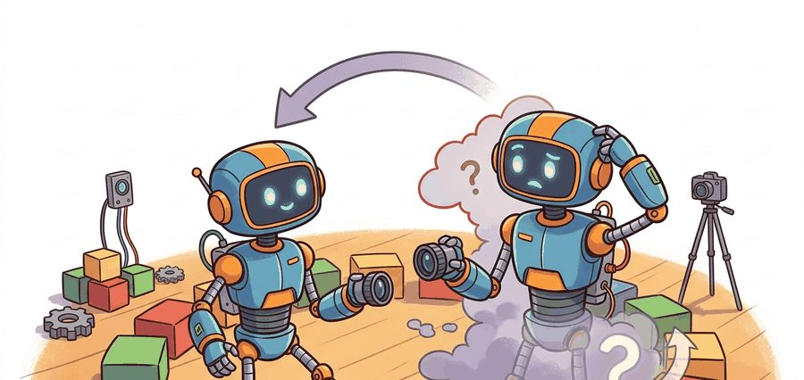
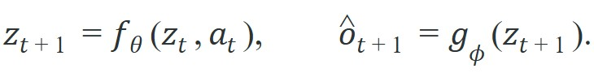
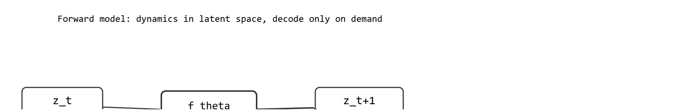

The best predictive target is the one the controller would pay to know one step earlier.
A Horizon-Aware Predictor

This section assumes familiarity with latent-state representations introduced in section 36.1 and with the coordinate-frame conventions from section 4.2. The prediction-target trade-offs developed here feed directly into the latent world-model architectures of sections 38.3 and 38.5, where the choice between state and observation targets shapes the entire planning loop.
A robot reaches for a glass and its fingers slip. Why? Its world model predicted the wrong next state, because it was predicting raw pixels instead of the contact force and surface-normal that actually drive the grasp decision. The choice of what a forward model predicts, joint angles versus camera frames versus abstract latent codes, is now the central design variable separating reactive reflexes from genuine planning. Here you will map the prediction-target landscape, understand when state-space models give controllers early access to the information they need, and learn when raw-observation targets earn their computational cost by preserving structure no hand-crafted state vector can capture.
Prediction targets are engineering choices, not aesthetics. The right target is the one that gives the controller earlier access to the variable that changes its decision.
Ask two engineers to build a forward model for the same robot and you can get two systems that share no output variable at all. One predicts a 32-number latent vector, the other reconstructs a full camera frame, and both are legitimate. As Figure 36.2A illustrates, the same perception stack can branch two ways: it can predict a compact latent state, or it can reconstruct raw observations. Each branch serves a different control purpose. A forward model (any function that maps the current state and action to the predicted next state) can predict physical state, latent state, observation, reward, contact flags, or some mixture of them. Here latent state means a compact learned vector that summarizes the scene rather than a hand-engineered list of physical quantities. A common latent-state factorization is

So far: a forward model can target physical state, latent state, or raw observation; the latent-state factorization above splits the dynamics function $f_\theta$ (which advances the compact code) from the decoder $g_\phi$ (which reconstructs a sensor-space observation only when something downstream actually needs it).
If the planner reasons directly in latent space, the decoder is optional at decision time. If the planner needs image-space occupancy, object masks, or human-interpretable diagnostics, the decoder becomes operationally important rather than decorative. The diagram below traces this split end to end: the dynamics function advances the latent state while the decoder branch, shown dashed, is invoked only when a downstream module actually needs a reconstructed observation.

This factorization matters for physical robots. The latent $z$ stays compact enough to roll out hundreds of steps within a real-time control budget, yet it still encodes the contact forces, velocity, and object geometry that drive decisions. A raw-pixel forward pass at every planning step would exceed the compute budget of most onboard processors, so separating the dynamics from the decoder lets the planner run fast and reserves the decoder for human inspection or vision-based modules that genuinely need rendered frames.
Before reading further, consider this: if your planner has a one-millisecond budget per step, which prediction target do you keep and which do you discard?
Whichever target you decide to keep, the model only earns that target through how it is trained, so consider next how the loss shapes the latent. Training works by minimizing a combined loss: a reconstruction term pushes $g_\phi(z_{t+1})$ close to the observed $o_{t+1}$, and a consistency term keeps consecutive latents on a smooth trajectory under action $a_t$. The reconstruction signal shapes the latent so it encodes scene content; the dynamics term shapes $f_\theta$ so predictions stay accurate across multi-step rollouts. Neither signal alone is sufficient because a reconstruction loss without dynamics produces a good encoder but a useless predictor, while a dynamics loss without reconstruction can collapse the latent to a trivial constant.
Think of baking bread: the hydration ratio (reconstruction signal) determines whether the crumb is open and chewy, but without the proofing schedule (dynamics signal) the dough never develops the gluten strands that hold the structure in place over time. You need both together. Optimize only hydration and you get a flat, wet mass that looks like dough but collapses; optimize only proofing time on a dry dough and you get a well-structured loaf with no flavor or moisture. The reconstruction loss shapes what the latent encodes at any single moment, while the dynamics loss shapes how that encoding evolves from one step to the next. Removing either term breaks the model in a different but equally decisive way.
Once both loss terms are in place and the latent trains cleanly, the remaining decision is what that latent should ultimately represent, which brings the state-versus-observation choice into sharp relief.
| Target | Strength | Risk |
|---|---|---|
| Physical state or delta state (a delta state predicts the change since the last step, e.g. $\Delta x$, rather than the absolute value) | Cheap rollout, clean constraints, easy cost design | Misses hidden scene factors if the state is underspecified |
| Latent state | Compresses perception and control into one interface | Harder to debug when the latent drops task-relevant detail |
| Pixel or depth observation | Keeps scene detail for occlusion and contact reasoning | High compute cost, easy to optimize the wrong visual details |
Real systems illustrate these trade-offs concretely. PlaNet (Hafner et al., 2019) and DreamerV3 plan entirely in latent state. The decoder trains as an auxiliary signal to shape the latent, then drops out at decision time, which keeps rollout cost low. The payoff can be substantial, though the exact magnitude is benchmark-dependent. A model-free agent solving the DeepMind Control Suite walker-walk task typically needs around 500,000 environment steps to reach expert performance. A latent-state world model reaches the same level in roughly 5,000 steps in the original PlaNet benchmark, a roughly 100x reduction on that specific task; other tasks and implementations show smaller gains, but the gap matters enormously when each real-robot step costs seconds of wear and risk. Practitioners call this predict in latent, discard the decoder. A 512-step planning rollout that reconstructs pixels at every step can take 4 to 8 seconds on a mid-range GPU (as measured on an NVIDIA V100 in 2023). The same rollout over the latent alone typically completes in under 400 milliseconds, a roughly 10x wall-clock gap, though the exact ratio depends on decoder architecture and image resolution, and gains this large should not be assumed to generalize to every control task without measurement. By contrast, Transporter Networks (Zeng et al., 2021) keep prediction in image space because the spatial layout of objects directly encodes which grasp is feasible and a compact state vector would lose that structure. TD-MPC2 (Hansen et al., 2023) takes a middle path: it predicts a learned latent but adds a reward predictor head so the planner can estimate value without reconstructing pixels at all.
In DreamerV3 and TD-MPC2, the decoder is instantiated as part of the model class and will run on every forward pass unless you explicitly set it to eval mode and wrap planning calls with torch.no_grad() while skipping the decoder branch. The clearest way to enforce this is to gate the decode call behind a boolean flag (e.g., decode=False) rather than relying on requires_grad alone, which suppresses gradient flow but not the forward computation. Skipping the decode step during a 512-step MPPI (Model Predictive Path Integral, a sampling-based planner covered in Section 37.3) rollout typically cuts wall-clock planning time by 30 to 50 percent on a single GPU, in practice with little to no measured loss in control quality on the benchmarks reported so far, though this should be verified on any new task rather than assumed.
The code below contrasts a latent-state predictor with an observation predictor on a toy pushing task. The latent model predicts object position directly; the observation model predicts a rendered pixel coordinate and then recovers position from it.
# Compare a direct state predictor with an observation-space predictor.
# The state model predicts object position; the observation model predicts
# a pixel coordinate that must be converted back into world space.
from math import fabs
x_t = 0.40
action = 0.12
true_next = x_t + action
state_pred = x_t + 0.95 * action
pixel_scale = 320.0
predicted_pixel = pixel_scale * (x_t + 0.90 * action) + 2.0
obs_pred = predicted_pixel / pixel_scale
print(
{
"true_next": round(true_next, 3),
"state_pred": round(state_pred, 3),
"obs_pred": round(obs_pred, 3),
"state_abs_error": round(fabs(true_next - state_pred), 4),
"obs_abs_error": round(fabs(true_next - obs_pred), 4),
}
){'true_next': 0.52, 'state_pred': 0.514, 'obs_pred': 0.519, 'state_abs_error': 0.006, 'obs_abs_error': 0.001}
Read the two absolute errors as a comparison of prediction targets: the state predictor is slightly less accurate here, but it requires no decode step. The observation route recovers extra precision only after converting back through a pixel scale, adding a computation the controller must pay on every step. The useful question is whether that precision gain actually changes a control decision, not merely which number is smaller.
state_pred) against a pixel-decode-then-invert observation predictor (obs_pred), printing both absolute errors against the true next position true_next.Trace a 3-step rollout of a 1D pushing task under both targets, with the same true dynamics $x_{t+1} = x_t + a_t$ and the same start $x_0 = 0.40$ and action sequence $a = (0.10, 0.10, 0.10)$. The latent model uses $f(z,a) = z + 0.96\,a$ (a slightly lossy dynamics, no decode). The observation model decodes to pixels with scale 320 and offset 2, predicts the pixel, then converts back: $\hat{x} = (320(x + 0.92\,a) + 2)/320$.
Step 1. True $x_1 = 0.50$. Latent: $0.40 + 0.96(0.10) = 0.496$, error 0.004, zero decode work. Observation: pixel $= 320(0.40 + 0.92\cdot0.10) + 2 = 159.4$, back to $159.4/320 = 0.498$, error 0.002, one decode plus one inverse-decode.
Step 2. Feed each model its own prediction. True $x_2 = 0.60$. Latent: $0.496 + 0.96(0.10) = 0.592$, error 0.008. Observation: $320(0.498 + 0.092) + 2 = 190.8$, back to $0.5963$, error 0.0037.
Step 3. True $x_3 = 0.70$. Latent: $0.592 + 0.096 = 0.688$, error 0.012. Observation: $320(0.5963 + 0.092) + 2 = 222.4$, back to $0.6951$, error 0.0049.
The observation route stays closer to truth (final error 0.0049 versus 0.012) but pays a decode and an inverse-decode at every one of the three steps. Over a 512-step planner that is 512 extra decode passes for a precision gain that, here, never crosses the threshold needed to flip a grasp-or-wait decision. That is the whole design tension in one tiny example: the cheaper target compounds error faster, and you keep it anyway unless the lost precision actually changes an action.
Use PyTorch or JAX for the predictors, Gymnasium for the transition contract, and MuJoCo when the state variable should include contact, velocity, or actuator dynamics rather than only kinematic position.
Predict the smallest variable that preserves the control objective. Add a decoder only when humans, downstream modules, or the planner itself genuinely need observation-space detail.
A common assumption is that a forward model must predict the next raw observation, because observations are what sensors actually return. In embodied AI this is wrong: a forward model is any function that maps the current state and action to the next state, and that state need not be an observation at all. Predicting a compact latent vector $z_{t+1}$ is a fully valid forward model even when no pixel is ever reconstructed. The correct mental model is that the dynamics function $f_\theta(z_t, a_t)$ and the decoder $g_\phi(z_{t+1})$ are separate components with separate purposes; planning lives in the dynamics, and the decoder is an optional tool for modules that genuinely require sensor-space output.
A decoder with beautiful frames can hide a useless latent. If the planner acts on latent state, audit value error, cost error, and constraint violation, not only image quality.
State prediction fails silently when the chosen state vector is underspecified. A joint-angle predictor for a manipulation task that ignores object position will accumulate large errors the moment the robot makes contact, because the contact force depends on the object, not just the arm. The model will appear accurate on free-motion rollouts and then collapse exactly when the controller needs it most. Always verify that every variable the cost function reads is either in the state vector or derivable from it without ambiguity.
A drone dodging cables in clutter may need pixel-space or depth-space prediction because the obstacle geometry matters directly. A torque-limited arm tracking a known part usually benefits more from joint-state and contact prediction than from reconstructing the entire camera view.
Wayve's GAIA-1 driving world model predicts future driving scenes by rolling forward a learned latent and only decoding to video tokens when a frame is actually needed, exactly the predict-in-latent, decode-on-demand split described here. The planner queries compact latent state for fast multi-step rollouts while the video decoder is reserved for visualization and rare scene-detail checks, keeping the prediction loop within an onboard compute budget.
This section connects prediction targets to the representation choices in Chapter 28, the camera-frame geometry in Chapter 4, and the latent world-model machinery in Chapter 38.
Tokenized world models for long-horizon prediction. Transformer-based world models that represent future states as discrete token sequences are scaling to much longer horizons than recurrent latent models. DIAMOND (Alonso et al., 2024, ICLR 2025 Outstanding Paper) trains a diffusion-based world model entirely in token space and achieves near-human Atari scores while predicting 100-step futures with coherent object permanence, a regime where RNN (Recurrent Neural Network) latent models degrade sharply.
Multimodal prediction targets combining proprioception and vision. Rather than choosing between state and observation prediction, 2024 work couples multiple prediction heads that share a single latent backbone. Uni-Pi (Du et al., 2024) and similar video-language-action models (models that take video and language inputs and output robot actions from one shared network) learn a joint latent that simultaneously predicts low-dimensional end-effector state and a compact video token stream, allowing the planner to query whichever head is cheaper at each step while keeping both signals as regularizers during training.
Uncertainty-aware dynamics for safe deployment. Ensemble and conformal approaches that attach calibrated uncertainty sets to each predicted next state are moving from tabletop simulation to real hardware. SWIM (Zhan et al., 2025) wraps a latent dynamics model with conformal prediction intervals (a calibration method that produces a range around each prediction guaranteed to contain the true value at a chosen confidence level, without assuming a particular error distribution), letting a safety filter veto plans whose predicted state trajectory leaves the certified region, demonstrated on a Spot robot navigating unstructured terrain.
Open problem for PhD students. All three directions above require the prediction target to remain stable under distribution shift between training data and deployment. When the robot encounters a novel object or an unseen contact mode, the latent encoder silently maps it to the nearest familiar region, producing confident but wrong predictions. No current method detects this encoder-level novelty in real time without a separate held-out dataset. A tractable open problem is designing an online test for latent-space novelty that triggers replanning or data collection before the prediction error compounds across a multi-step rollout, using only information available on the robot at deployment time.
Use the Design Rule above as your test: the smallest variable that still preserves the control objective is the right target. Name one task where observation prediction is necessary and one where it is wasteful. What information does the controller need in each case, and how would you prove that your chosen target supplies it?
State prediction tells the robot where the world is going. Observation prediction tells it what the sensors will look like when the world gets there.
Prediction targets should be chosen by control relevance, not by visual appeal. The cleanest target is the one that best supports the next decision under the real system budget.
Pick one robot task and specify a state-space predictor and an observation-space predictor for it. Write the exact metric that would tell you which target is more useful for action.
Goal. Measure empirically how prediction-target choice changes multi-step rollout accuracy and per-step cost, the core trade-off of this section.
Tools needed. Python with gymnasium, numpy, and scikit-learn (or a tiny PyTorch MLP). No GPU required; runs on a laptop CPU in well under 30 minutes.
Setup (about 10 minutes). Collect roughly 5,000 transitions from CartPole-v1 under a random policy, storing tuples of (observation, action, next observation). Train two one-step forward models on this data: a state model that predicts the 4-dimensional next observation vector directly, and an observation model that first maps state to a higher-dimensional encoded feature (a random Fourier feature lift projects the state through fixed random sinusoids to a higher-dimensional space where linear models can fit curved relationships more easily, for example a 32-dimensional lift), predicts in that lifted space, then projects back with a fitted linear inverse.
What to vary. (1) The rollout horizon: feed each model its own prediction and unroll 1, 5, 10, and 20 steps. (2) The lifted-feature dimension for the observation model (8, 32, 128). (3) The amount of training data (1k versus 5k versus 20k transitions).
What to observe. Plot per-step absolute error in pole angle versus horizon for both models, and time each rollout with time.perf_counter. You should see the state model compound error gracefully while the observation model is slightly more accurate per step but several times slower per rollout, and you should find a horizon beyond which neither model's pole-angle prediction is trustworthy. Confirm that the higher lifted dimension buys accuracy only up to a point and then mostly buys wall-clock cost, the empirical signature of paying for observation-space detail the controller does not need.
Beginner (weekend): Build a one-step latent-state predictor for a cart-pole task in Gymnasium using a small MLP (Multilayer Perceptron) trained on (observation, action) pairs to predict the next observation vector; the key challenge is choosing a loss that punishes errors on the pole angle more than on cart position, since only the angle drives the terminal condition. Intermediate (1-2 weeks): Implement a multi-step forward model in MuJoCo's Ant-v4 environment using PyTorch, with one head predicting joint-angle state and a second head predicting a rendered depth frame, then compare 10-step rollout accuracy and wall-clock planning cost at each horizon to see exactly where the observation head starts hurting throughput. Intermediate (1-2 weeks): Wire a learned latent dynamics model into a LeRobot pipeline for a tabletop push task, train the encoder jointly with a reconstruction loss and a one-step consistency loss as described in this section, then ablate each loss term to confirm that removing either one degrades multi-step prediction accuracy on held-out trajectories.
MuDreamer authors. "MuDreamer: Learning Predictive World Models without Reconstruction." (2024). https://arxiv.org/html/2405.15083v1
A useful recent example of reducing or removing full reconstruction when task relevance matters more.
Hafner, D. et al.. "Mastering Diverse Domains through World Models." (2023). https://arxiv.org/abs/2301.04104
DreamerV3 is a strong modern example of latent predictive learning tied to behavior.
Hafner, D. et al.. "Learning Latent Dynamics for Planning from Pixels." (2019). https://arxiv.org/abs/1811.04551
PlaNet is the classic argument for planning in latent state rather than pixel space.